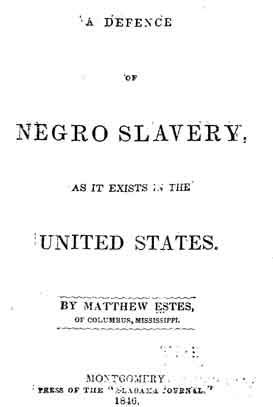

Southern Rhetoric From Planter Aristocracy During Reconstruction
Source: Matthew Estes,
A Defence of Negro Slavery, As it Exists in the United States
Montgomery: Press of the Alabama Journal, 1846
[Newberry Library Call #: H 583 .27]

Transcript of Document